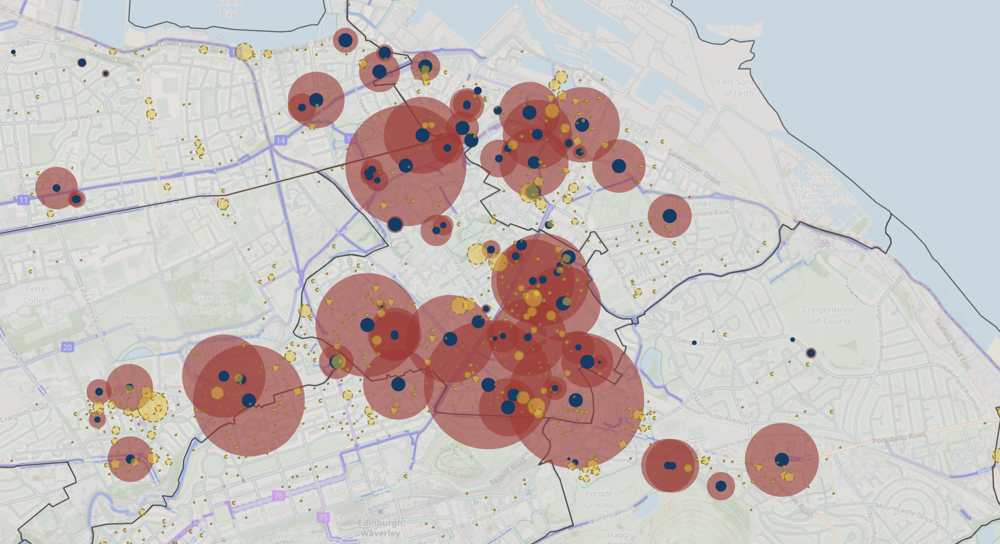
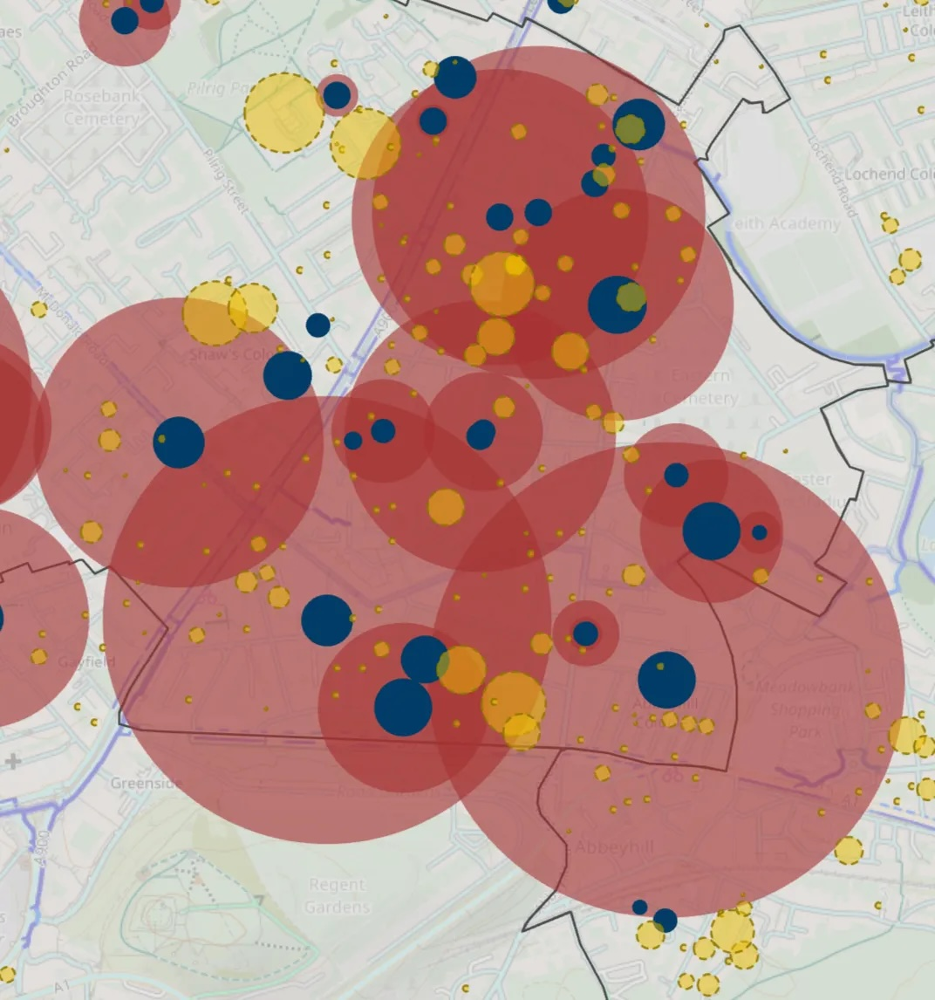

After adjusting for duplication across waiting lists, I estimate that around 7,000 people currently want a spot in one - but Edinburgh Council only provide 1,500 spaces.
The most popular hangar location is Rossie Place near Easter Road, with over 100 people on the waiting list. Across Morningside, 6% of flat dwellers have requested a spot.
There are now 277 hangars across Edinburgh - to satisfy current demand would require an additional 938.

The largest ward-level waiting list is Leith Walk, with around 1,100 people waiting on a spot. 190 additional hangars are required, with only 50 provided.
As a ratio of current provision, there are 7 people for every spot in Inverleith.
📋 Comparison Table - Edinburgh hangar demand and provision by ward (2026) »
Add this to the very long list of things the council should resolve before it thinks about more trams - hangars are self-funded, deliver more revenue than parking spaces, and latent demand for them is likely well over 10,000 (assuming that 6% of flat dwellers would want a spot).
The raw data is available here, by searching for request number 63936.
This article was originally published as a thread on Bluesky.